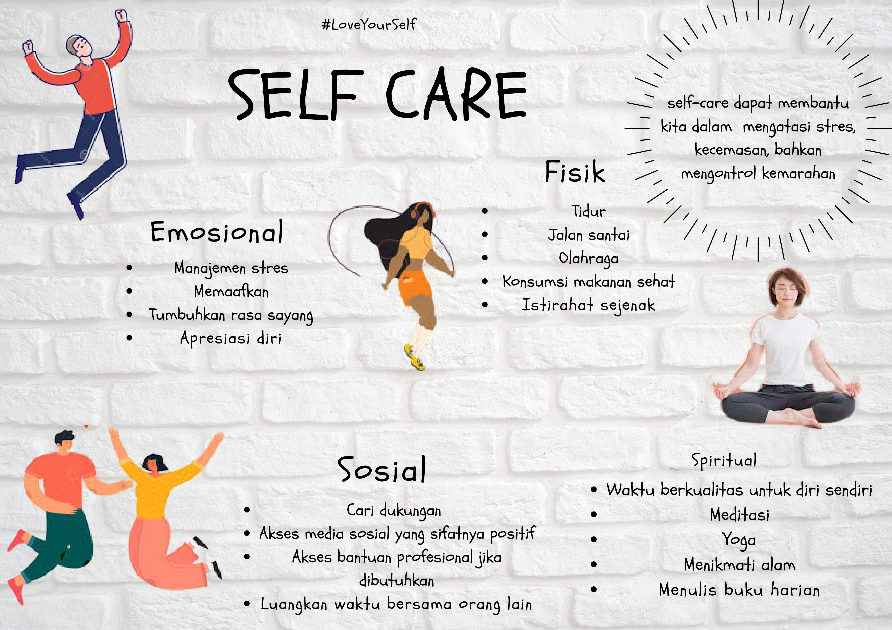
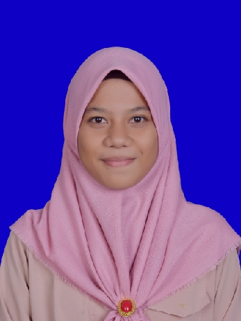

Welcome to Website
Everyone thinks of changing the world, but no one thinks of changing himself.
My Youtube Channel
Artikel
Berkenalan dengan Kesehatan Mental
Yogyakarta(15/12) - Kesehatan mental begitu istimewa, hingga WHO menetapkan setiap tanggal 10 Oktober diperingati sebagai Hari Kesehatan Jiwa Sedunia. Ditetapkannya momen ini tentu memiliki tujuan, yaitu mengkampanyekan kesehatan mental dan memberikan edukasi kepada masyarakat mengenai isu-isu yang relevan berkaitan dengan kesehatan mental.
Lalu, apa yang dimaksud dengan kesehatan mental ? Menurt WHO (2004), kesehatan mental adalah kondisi sejahtera dimana individu mampu :
Menyadari kemampuan yang ia miliki, Mengatasi tekanan dan stres dalam kehidupan sehari-hari, Bekerja produktif, dan mampu berkontribusi aktif di lingkungan atau komunitasnya.
Lalu, kondisi seperti apa yang masuk dalam kategori mengalami masalah kesehatan mental? Dan, apakah kita sehat mental? Terdapat suatu istilah mental distress, yakni perasaan yang dialami oleh seseorang ketika dihadapkan pada situasi yang menimbulkan ketidaknyamanan, misalnya tidak memiliki pekerjaan tetap, mengalami PHK, beban kerja yang tinggi, banyaknya tugas sekolah, dikhianati teman, dsb. Berbagai situasi tersebut akan memicu munculnya perasaan seperti sedih, kecewa, merasa bersalah, pesimis, marah, benci, atau lainnya. Kondisi-kondisi ini sangatlah wajar, karena bagaimanapun juga, kita akan selalu dihadapkan pada situasi yang sifatnya dinamis dan tidak terduga. Mental distress ini dapat menjadi sebuah kesempatan bagi individu untuk berupaya mengatasinya dengan menggunakan ketrampilan penyelesaian masalah secara tepat. Ketika individu mampu mengatasi kondisi tidak nyaman tersebut dan berhasil mengembangkan dirinya secara positif, maka yang bersangkutan tidak membutuhkan penanganan lebih lanjut yang mungkin melibatkan tenaga profesional.
Kemudian, kondisi apa yang dapat memicu masalah kesehatan mental lebih lanjut ? Seperti yang telah dijelaskan sebelumnya, bahwa mengalami suatu kejadian yang tidak nyaman dalam keseharian adalah hal wajar. Otak manusiapun juga akan berusaha untuk menyeimbangkan kembali kondisi fisik dan psikologis dengan cara adaptif. Namun, bila situasi yang terjadi datangnya terus-menerus (beruntun) dan sifatnya sangat jarang dibanding keadaan mental distress, seperti kematian anggota keluarga, bullying yang sangat berat, hingga dirasa mengganggu fungsi keseharian, maka kondisi ini dapat beresiko memicu munculnya masalah kesehatan mental. Jika individu tersebut belum mampu mengatasi masalah secara optimal, maka yang bersangkutan dapat melibatkan peran profesional (misalnya psikolog) untuk membantunya mengupayakan strategi penyelesaian masalah yang lebih efektif.
Terdapat pula istilah gangguan mental, yakni suatu keadaan dimana otak mengalami permasalahan sehingga individu tidak dapat menjalankan fungsi kesehariannya, sebagai contoh kesulitan tidur hingga beberapa waktu, mengurung diri di kamar dan menolak aktivitas, gangguan makan yang ekstrem, menghindari relasi sosial, bahkan munculnya ide atau pikiran menyakiti diri. Kondisi ini tentu sudah membutuhkan proses diagnosis dan penanganan lebih lanjut sesuai temuan gejala yang dilakukan oleh profesional seperti psikiater dan psikolog.
Lantas, hal apa saja yang dapat kita lakukan untuk menjaga kesehatan mental dan tetap dapat berfungsi dalam keseharian?
Rawatlah diri secara berkala. Anda dapat melakukan teknik self care, yakni serangkaian tindakan untuk fisik, emosi, dan spiritual yang mencerminkan cara kita menjaga diri kita sendiri. Self-care bukanlah sebuah keegoisan, melainkan bentuk kepedulian terhadap kesehatan dan kesejahteraan fisik serta mental kita. Meluangkan waktu untuk melakukan self-care dapat membantu kita dalam mengatasi stres, kecemasan, bahkan mengontrol kemarahan. Melakukan aktivitas sederhana dan yang disukai secara rutin dapat meningkatkan kesejahteraan psikologis kita. Berikut beberapa contoh yang dapat kita lakukan sebagai bentuk dari self care. Bekali diri dengan kemampuan problem solving yang optimal. Sadari bahwa masalah hadir untuk diselesaikan, bukan untuk dihindari (flight response). Pahami pula penyelesaian masalah tidak bersifat instan, melainkan butuh proses dan konsistensi dalam mengupayakannya. Belajar tentang manajemen stres dan ketrampilan mengelola emosi, dapat kita gunakan sebagai “amunisi” manakala tengah dihadapkan pada situasi yang tidak nyaman.
Jangan melabel atau mendiagnosa diri. Memberikan cap bahwa “aku ini payah”, “aku memang pantas mengalami ini”, dsb hanya akan menimbulkan ketidaknyamaan dalam diri karena adanya rasa tidak berharga. Atau, “dari artikel ini, sepertinya aku depresi” atau “aku sering alami swing mood, berarti aku mengalami bipolar”. Diagnosa adalah bagian dari proses pemeriksaan yang dilakukan profesional untuk membantu pemberian penanganan (medis maupun psikologis) yang tepat terhadap pasien. Jika memang merasakan ada yang tidak nyaman dan dinilai menurunkan kualitas kesehatan, segera akses layanan kesehatan untuk melakukan konsultasi dengan tenaga medis dan psikolog. Sama halnya dengan kesehatan fisik, kesehatan mental juga merupakan sebuah kebutuhan dasar yang akan mempengaruhi kualitas hidup seseorang. Pahami kondisi diri, kenali situasi dan efeknya, supayakan optimalisasi penyelesaian masalah, serta hubungi profesional jika memang sangat dibutuhkan. Selamat berproses dalam perjalanan kehidupan. Salam sehat jiwa.
Aril Halida, M.Psi, Psikolog - Klinik Psikologi RS Jiwa Grhasia DIY
My profile
Putri Afifah Rizki
Hi, Nama Saya Putri Afifah Rizki, Saya adalah individu yang kreatif. Saya sangat menyukai berbagai solusi dari berbagai permasalahan yang ada serta bersikap terbuka tentang semua kemungkinan solusi yang terbaik. Kreatifitas yang saya miliki, dapat di pastikan bisa membantu dalam menjadi seorang leader yang baik.